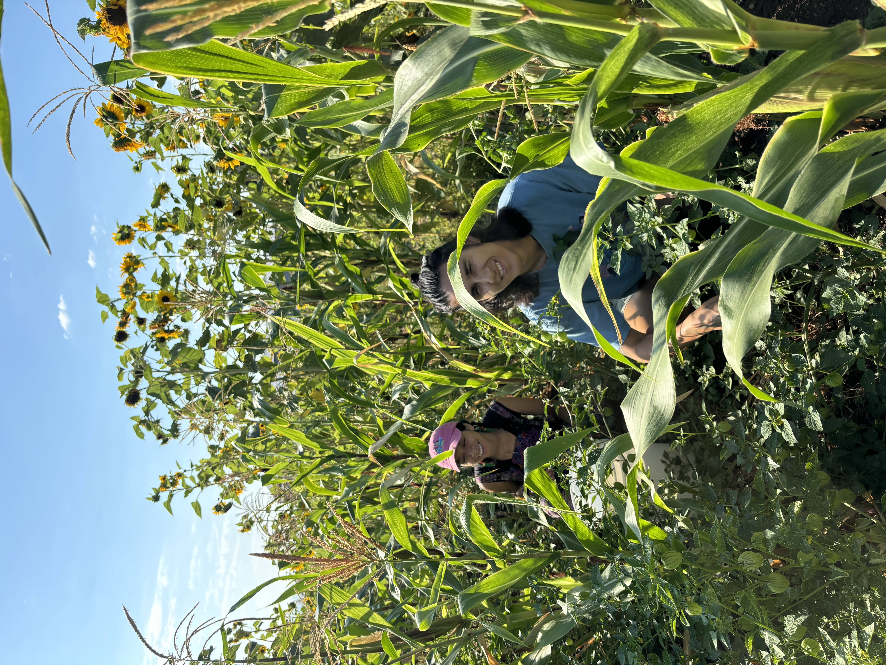

I'm Alec, I'd like to bring my lineages here. My mother's great grandfather was an unwelcome guest on the northern coast of Mindanao, in the Phillipines. He was a mestizo, with parents with spanish and indigenous ancestry. He was a mogul in the coconut industry and 'owned' many acres of land where he extracted from the land for profit, amassing a wealth that would enable close proximity to the colonial empire for the rest of his lineages existence in the Phillipines. many of the my family members remain in an alienated, bad relationship with the lands that nourish them. My father's grandmother crossed the '''US' / 'Mexico''' border with her mother as a child. many of them being white passing, they had a hard existence in Southern California, but were still able to access upward mobility in the White supremacist culture of the so called United States. After 4 generations, my father achieved the American dream, and is successfuly passing as a white man. My parents raised me as probably unwelcome guests on ramaytush speaking Ohlone land. They worked extremely hard to inch closer to whiteness and the status of 'good capitalists.' I grew up mostly culturally white American, and had little intimate relationships with the people of the land I existed with. My heart was soothed by the smell of wet bay leaves, and the sound of the ocean, but I wasn't connected to a culture that gave back the abundance we were offered. My position now is to come back, and see if there are people of the land I reside with that want to have a relationship with me.

Links to my follow-along exercises